OnlyCats adalah platform mobile untuk mendukung rescue, perawatan, dan adopsi kucing jalanan. Aplikasi ini memiliki dua sisi: User untuk pelaporan rescue dan pengajuan adopsi, serta Admin Panel yang menjadi fokus kontribusi saya — sebuah dashboard lengkap untuk mengelola seluruh operasional platform.
| Komponen | Teknologi | Fungsi |
|---|---|---|
| UI Framework | Flutter (Dart) | Pengembangan antarmuka lintas platform |
| Backend / Database | Cloud Firestore (Firebase) | Penyimpanan data real-time (NoSQL) |
| Autentikasi | Firebase Authentication | Login, register, Google Sign-In, reset password |
| Penyimpanan File | Firebase Storage | Upload dan akses foto kucing & rescue |
| Notifikasi | flutter_local_notifications | Push notification lokal pada perangkat |
| Maps / Lokasi | Open Street Maps | Pemilihan lokasi rescue menggunakan peta |
| State Management | StatefulWidget (built-in Flutter) | Pengelolaan state per halaman |
| Desain UI/UX | Figma | Prototyping dan perancangan antarmuka |
| IDE | Android Studio, Visual Studio Code | Lingkungan pengembangan utama |
Saya bertanggung jawab penuh atas pengembangan Admin Panel — mulai dari desain UI di Figma hingga implementasi di Flutter dengan integrasi Firebase. Berikut fitur-fitur yang saya bangun:
Halaman utama admin menampilkan ringkasan statistik (total kucing, laporan rescue, adopsi) beserta navigasi ke seluruh menu administrasi. Halaman Insights menyediakan data analitik operasional secara real-time dari Firestore.
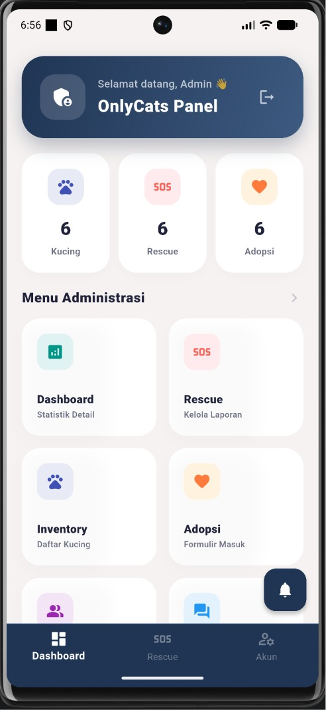
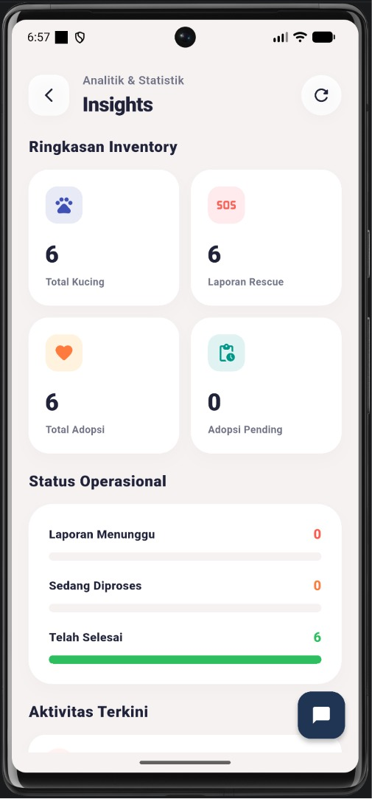
Admin dapat melihat dan mengelola semua laporan rescue yang masuk. Laporan dapat difilter berdasarkan status (Semua / Menunggu / Diproses / Selesai) dan diperbarui statusnya langsung dari daftar.
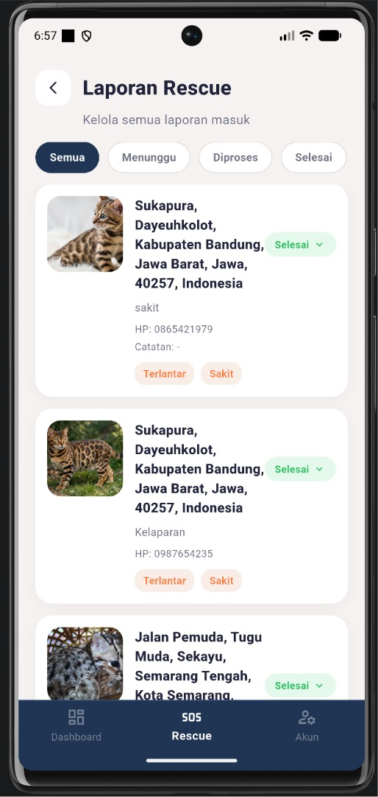
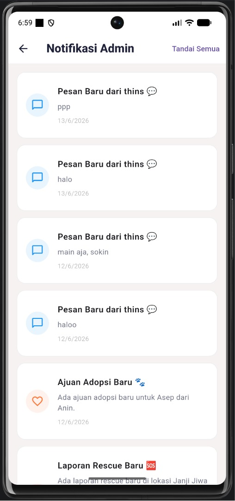
Admin dapat mengelola data kucing yang tersedia untuk adopsi. Tersedia fitur tambah, edit, dan hapus data kucing beserta upload foto ke Firebase Storage dan pemilihan lokasi via peta.
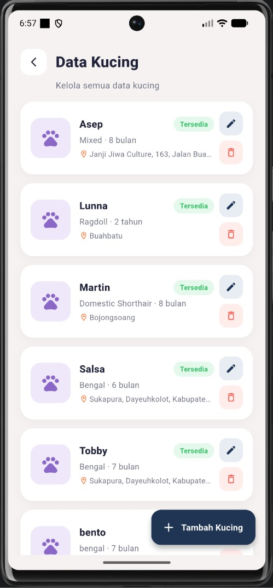
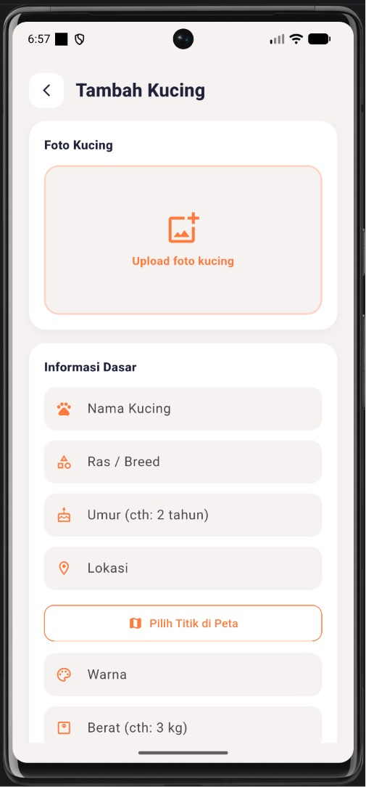
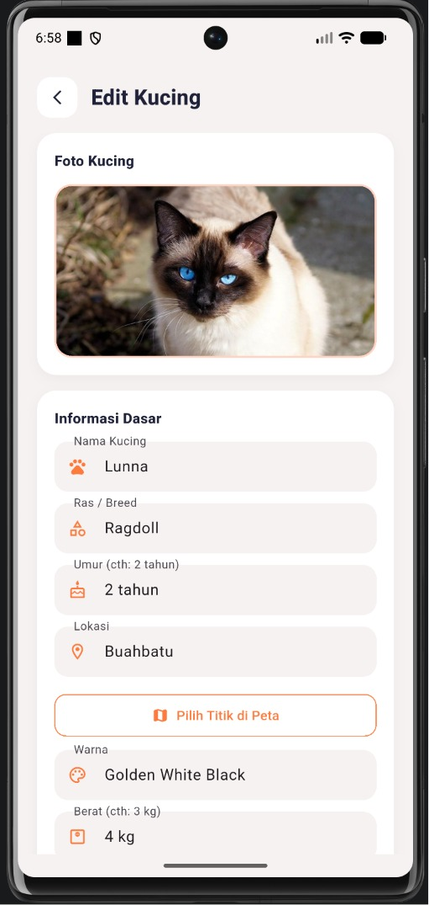
Halaman ini menampilkan semua formulir adopsi yang masuk dari user. Admin dapat menyetujui atau menolak pengajuan adopsi, dengan filter berdasarkan status.
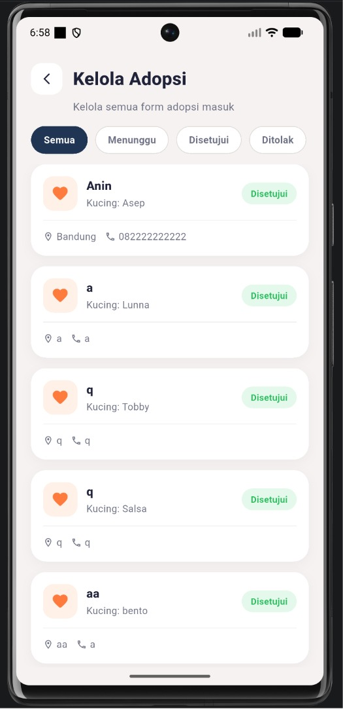
Fitur chat real-time memungkinkan admin berkomunikasi langsung dengan user. Admin melihat semua percakapan aktif dalam satu daftar dan dapat membalas pesan secara langsung.
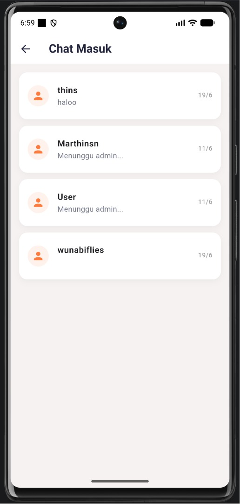
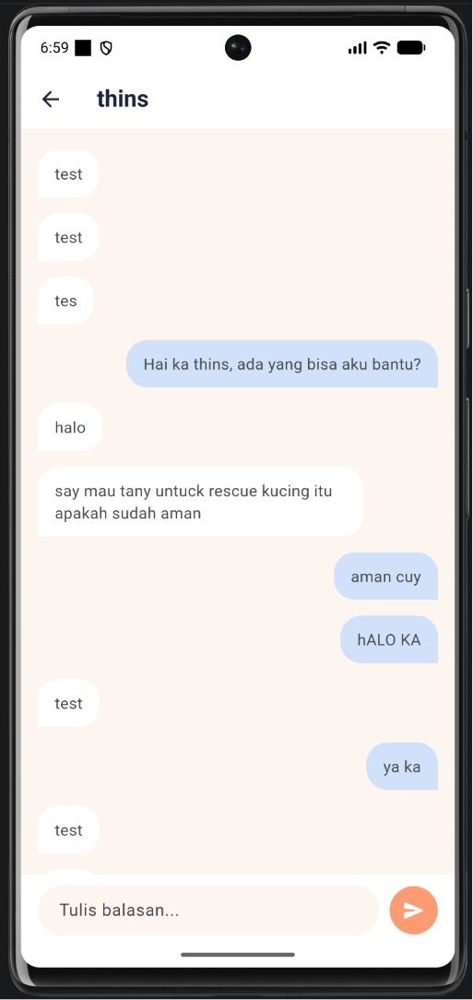
Admin dapat melihat dan mengelola seluruh pengguna terdaftar, dengan fitur pencarian berdasarkan nama atau email, serta hapus akun pengguna.
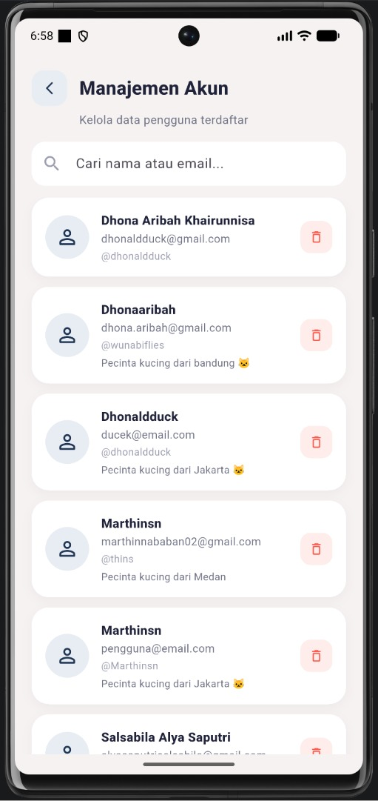
Halaman akun admin menyediakan pengaturan profil pribadi dan keamanan akun.
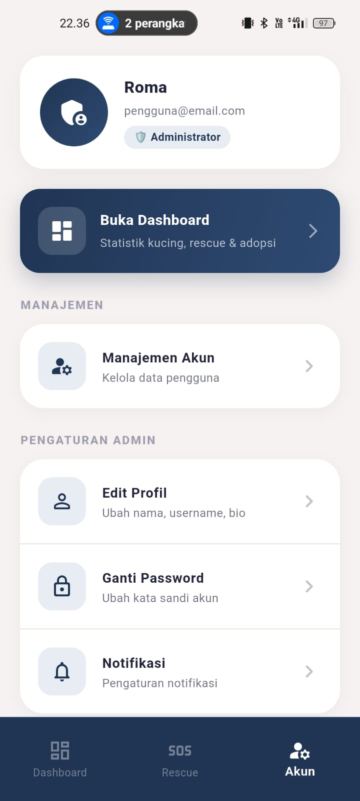
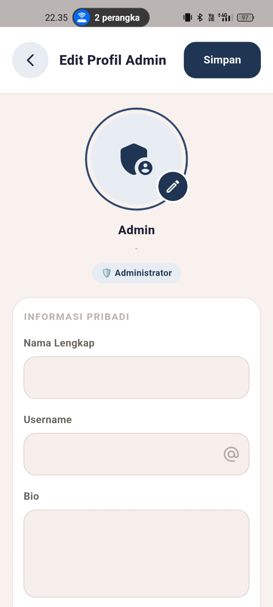
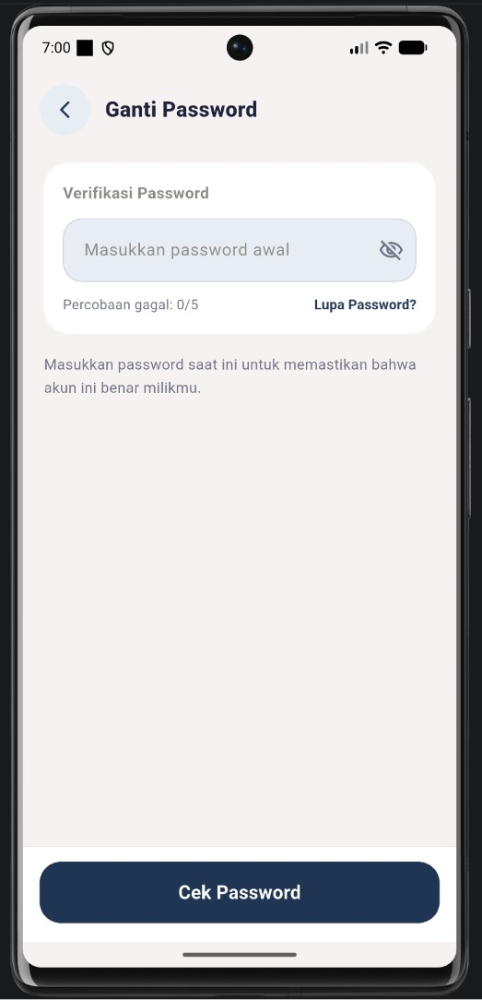
Dalam project OnlyCats Mobile, saya membangun seluruh sisi Admin Panel — mencakup 7 modul fungsional yang terintegrasi penuh dengan Firebase. Pengerjaan meliputi desain UI di Figma, implementasi Flutter dengan StatefulWidget, real-time data sync via Firestore, manajemen file di Firebase Storage, dan sistem notifikasi lokal. Hasil akhir adalah admin panel yang fungsional, responsif, dan siap digunakan untuk operasional rescue & adopsi kucing.